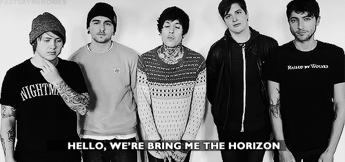

Pagina inicial Carreira Top 10 Album video
Bring Me The Horizon
Bring Me The Horizon (Abreviado para BMTH) é uma banda de Post-hardcore (anteriormente considerada uma banda de Deathcore), criada em Sheffield, Yorkshire, na Inglaterra. A banda formou-se no ano de 2004, com ex-membros de diferentes bandas da mesma cidade. Seus atuais integrantes são Oliver Scott Sykes, Matt Kean, Lee Malia, Jordan Fish & Matt Nicholls.